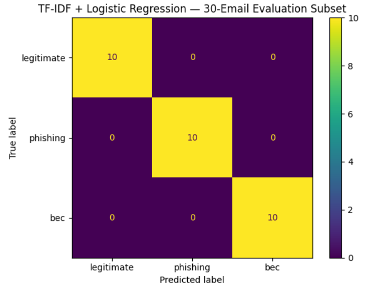
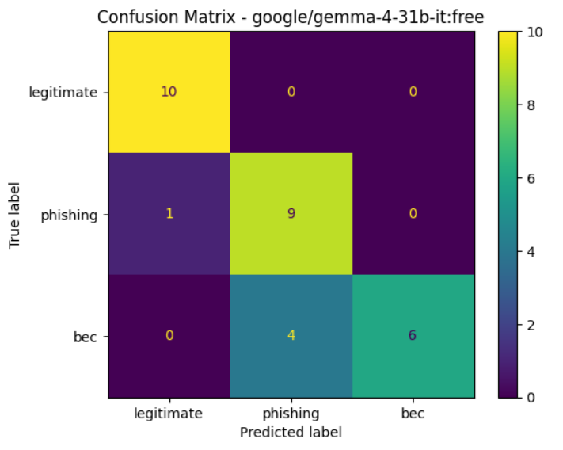
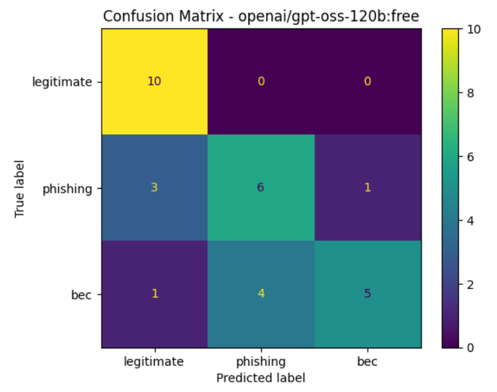

PROJECT 01 / AI & RESEARCH
LLM-Driven Email Threat Detection
Exploring how large language models can identify phishing and business email compromise in enterprise email.
RESEARCH FRAMEWORK

01 / OVERVIEW
Can LLMs recognize email threats?
This research explores zero-shot classification of enterprise emails into legitimate, phishing, and business email compromise (BEC) categories, comparing LLM-based approaches with a traditional machine learning baseline.
02 / METHODOLOGY
From data preparation to evaluation.
- Curated and standardized 87,447 email records from two public datasets.
- Prepared training, validation, and test splits.
- Compared zero-shot LLM predictions with TF-IDF and Logistic Regression.
- Evaluated the final models on a balanced sample of 30 test emails.
03 / KEY FINDINGS
Traditional baseline vs. LLMs.
Accuracy · Test sample
Accuracy · Test sample
Accuracy · Test sample
The final evaluation used only 30 test emails. These results are preliminary and should not be generalized to production performance.
MODEL EVALUATION
Confusion Matrix Analysis



Both LLMs struggled to distinguish BEC from phishing, highlighting the challenges of detecting threats with overlapping linguistic patterns.
04 / RESEARCH OUTCOME
Research accepted for presentation.
The paper was accepted for presentation at ISITDI 2026. The project involved software development, data curation, model evaluation, and original research writing.